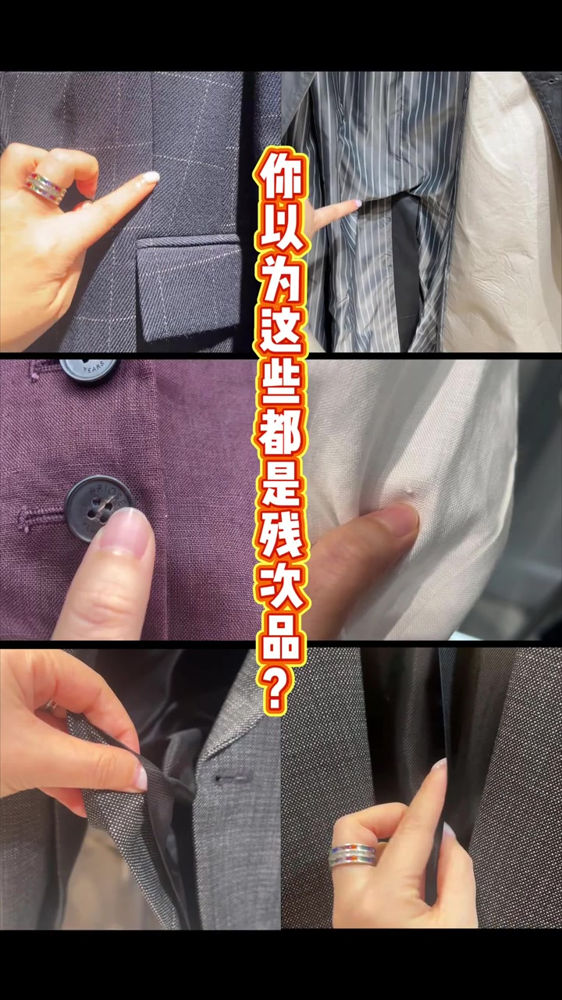
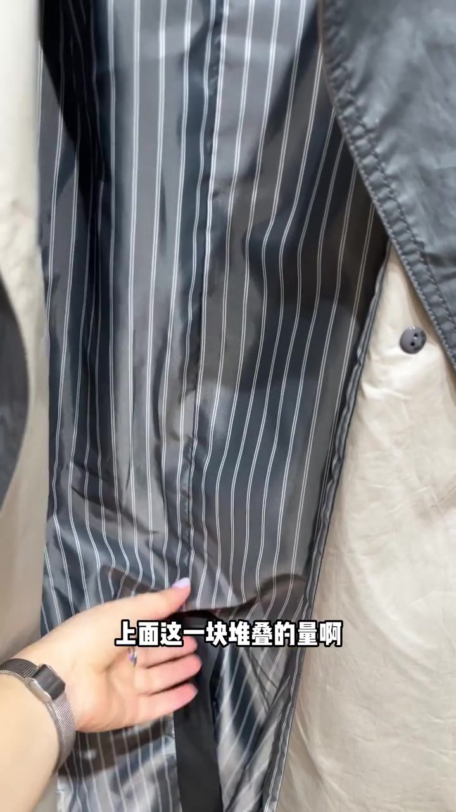
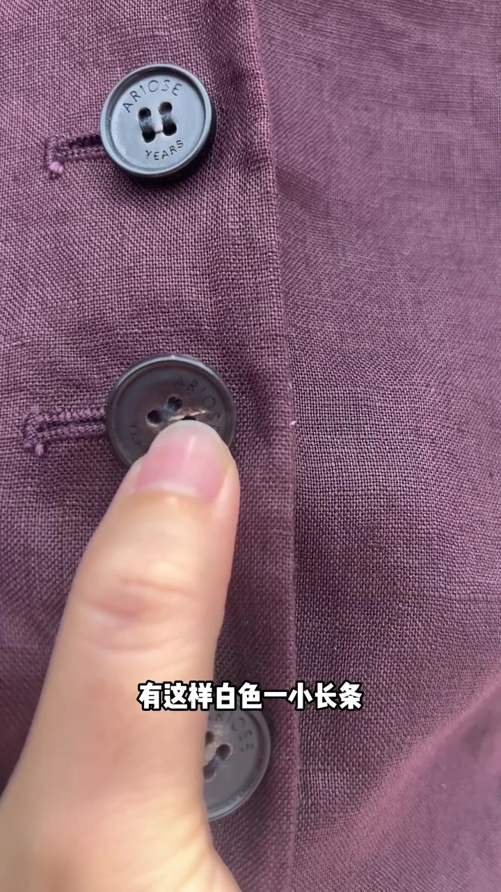
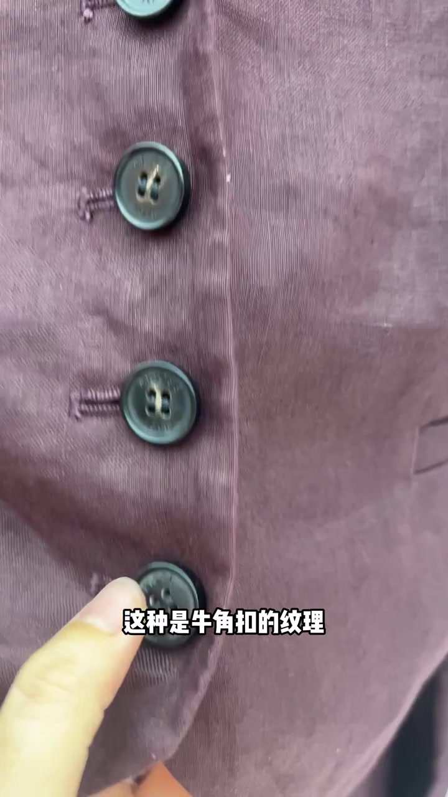
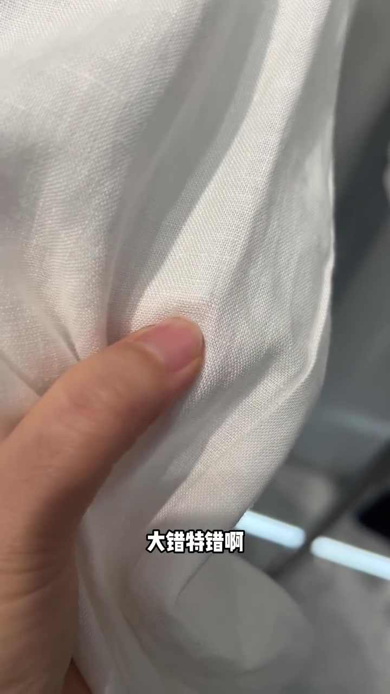
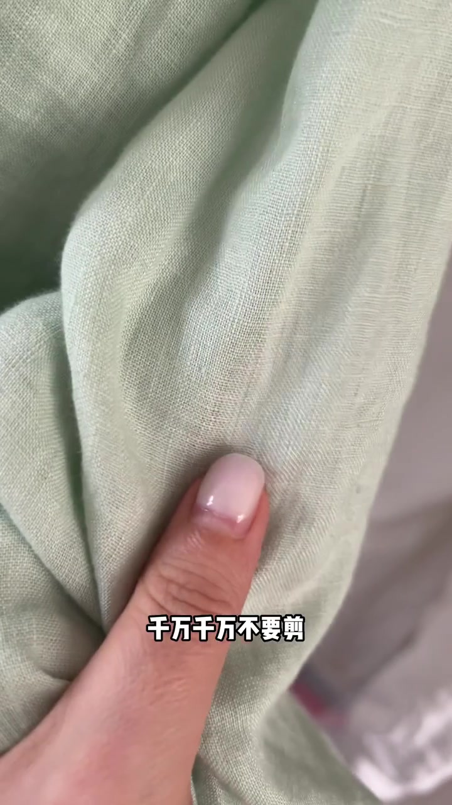
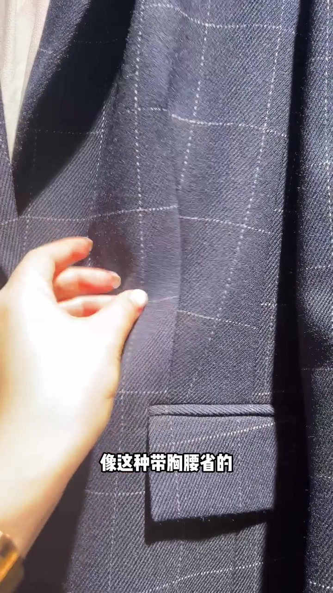
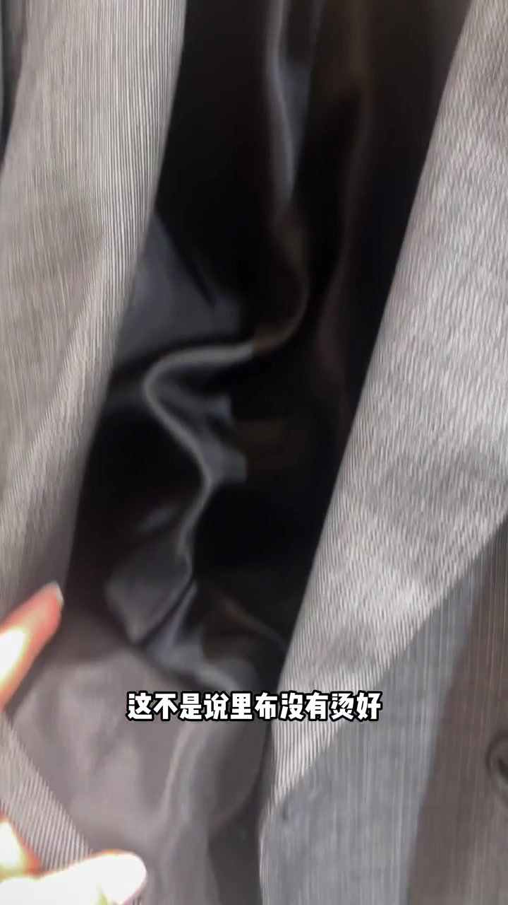

开场：你以为这些都是残次品？
视频一上来就是六宫格缝合、扣子与布面特写，正中黄字红描边字幕直问：“你以为这些都是残次品？”主讲人随后逐条拆穿这些“看起来像没做好”的细节。
可见字幕校正：Whisper 将「残次品 / 风衣后开衩 / 牛角扣 / 亚麻 / 麻结 / 不要剪 / 条格 / 胸腰省 / 里布 / 烫好 / 阻碍」等误识为近音字；下文按画面字幕叙述，文末转录区仍保留原始分段。

风衣后开衩：堆叠不是没做好
镜头切进风衣内侧：灰底白细条衬里在后开衩附近明显堆叠鼓起。字幕先点“风衣的后开衩”，再强调“上面这一块堆叠的量啊”。主讲人马上否定“没有做好”的猜测——这是故意留的活动量。
用途说得很生活：穿脱衣服、抬手臂时，不至于扯到下方或动作受限。画面里条纹衬里的褶皱不是熨烫失败，而是为活动预留的余量。
校正原话大意：这个不是说没有做好，这个是故意留的活动量……穿脱衣服或者抬手臂，不至于扯到下方或者受限。[00:05–00:12]

牛角扣上的白条：天然纹理，不是疵点
切到紫红色粗织面料上的深色扣子。手指点着其中一粒，字幕说扣子上有“白色一小长条”，再对比“其他扣子它就没有”——是不是以为是残品？其实并不是。
主讲人给出名称：这是牛角扣的纹理。真正的牛角扣，你找不到长得完全一样的两粒，因为每一粒纹理都有出入。镜头里扣面隐约可见大理石般的纹路与那道浅色痕迹。


亚麻小疙瘩叫麻结：别剪
白亚麻布面出现细小凸起，手指点上去。主讲人问大家是不是经常在亚麻衣服上看到这种小疙瘩，以为是次品——大错特错。字幕定名：这个叫麻结，相当于天然纤维亚麻的身份证。
原因也交代清楚：亚麻纤维比较短粗，纺纱过程难以完全均匀联合，所以才会形成麻结。接着是强硬提醒：千万千万不要剪，容易导致纤维断裂破洞。浅绿亚麻画面里，手指仍停在麻结旁，字幕写满“不要剪”。
这一段同时给出识别名（麻结）、成因（短粗纤维纺纱不匀）和误操作后果（剪断→破洞）。口吻是买衣纠偏，不是实验室纤维报告。


条格要对齐，但合体胸腰省是例外
原则先立住：条格的衣服必须对齐。但马上抛出例外——这种合体的是例外。镜头对着深色窗格纹西装，手指指向胸腰省位置，字幕写“像这种带胸腰省的不对齐，才是合理正常的”。
解释很直观：相当于一块格子布剪开到胸的位置，下面左右各缝进去一厘米左右，格子肯定会出现歪斜。男装合体的格子衣服也是一样。过程感从“必须对花”转到“为什么合体款会故意不对齐”。

里布后中与下摆：隐藏放量不是没烫好
收尾回到正经有里布的外套。主讲人让大家看里布结构：后中这一块有隐藏放量，下摆也必须有这种隐藏放量。手掀开灰呢外料，露出黑色光滑里布的余量。
字幕直接纠偏：“这不是说里布没有烫好，是必须要这样做。”若没有这个放量，伸胳膊、抬手臂都会受到阻碍。整支视频从“像残次”一路走到“这些余量恰恰是高品质活动余量”。
